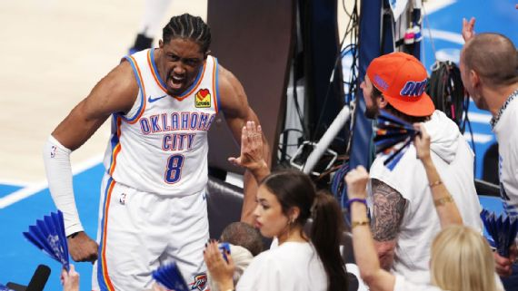

Jalen Williams tem noite de gala, Thunder segura reação dos Pacers e abre 3 a 2 nas Finais da NBA

Falta apenas uma vitória para o Oklahoma City Thunder vencer seu primeiro título da NBA desde a mudança de cidade. A equipe voltou a jogar dentro de suas características, ajustou a defesa e segurou as tentativas de reação do Indiana Pacers para vencer por 120 x 109 e abrir 3 a 2 na série.
Haliburton jogou a partida no sacrifício. O astro dos Pacers teve uma lesão na panturrilha e em vários momentos demonstrou estar desconfortável e com dor. Pouco agressivo em direção à cesta, tentou contribuir em outros fundamentos, mas faltou sua produção de arremessos para Indiana ter chances na reta final da partida. Por outro lado, o Thunder voltou a conseguir forçar erros e teve bons momentos dos seus pivôs quando estavam quadra simultaneamente. Mas a grande atuação da noite foi de Jalen Williams. O pivô manteve o bom momento dos minutos finais do Jogo 4 e liderou a equipe ofensivamente, conseguindo 40 pontos, seis rebotes e quatro assistências, seus melhores números em pós-temporada de toda a carreira.
Embalado pela vitória no Jogo 4, o Thunder começou a quinta partida com muita intensidade, aproveitando o apoio vindo da barulhenta torcida presente no Paycom Center. A defesa provocou sete erros dos Pacers apenas no primeiro período, que viraram contra-ataques e cestas fáceis. O principal jogador foi Isaiah Hartenstein. Com roubos, rebotes ofensivos e, principalmente, criação de espaços a partir dos bloqueios tanto para o homem da bola quanto indiretos, o pivô foi peça chave nos dez pontos de frente que OKC abriu nos primeiros minutos. Os Pacers tentaram reagir quando os elencos rodaram, mas logo Mark Daigneault recolocou o pivô alemão em quadra e Oklahoma voltou a controlar a partida.
No segundo período quem manteve o Thunder com a vantagem de dígitos duplos foram os jogadores vindos do banco. Cason Wallace e Aaron Wiggins tiveram aproveitamento praticamente perfeito nos arremessos e seguraram os momentos em que os titulares não estavam em quadra. Rick Carlisle pediu tempo para os Pacers, mas OKC voltou a forçar turnovers, marca registrada da equipe. Mais vibrantes em casa, os donos da casa mantiveram o domínio, com destaque para os cortes em direção à cesta de Jalen Williams. Ainda assim, Indiana tentava igualar a intensidade adversária, mantendo a diferença em 'apenas' 14 pontos, mesmo com Haliburton zerado no primeiro tempo.
Na volta do intervalo os Pacers cuidaram melhor da bola e diminuíram o número de erros. Os sucessivos cortes em direção à cesta, que renderam algumas das vitórias do time nestes playoffs, voltaram a aparecer. A diferença caiu para menos de dez pontos em poucos minutos, após bola de três pontos de Obi Toppin. OKC voltou a aproveitar alguns contra-ataques, mas a dupla Obi Toppin e T.J. McConnell estava entrosada tanto na defesa quanto no ataque, e Indiana encostou.
Liderados por Siakam, os Pacers seguiram mais quentes no segundo tempo. Foram eles quem forçaram erros e aproveitaram posses rápidas para pontuar com velocidade, diminuindo a diferença para apenas dois pontos. Thunder rapidamente colocou o quinteto titular novamente em quadra, aproveitando a noite iluminada de Jalen Williams e Hartenstein. Indiana teve a chance de virar a partida, mas Nembhard cometeu dois erros quase em sequência, e OKC aproveitou. Shai e Williams lideraram uma corrida de 7 x 0, obrigando os Pacers a pedirem tempo. Só que na volta para a quadra Nembhard cometeu mais um erro, e o Thunder abriu 14 pontos.
Carlisle recolocou Obi Toppin e T.J. McConnell em quadra, na expectativa de devolver a intensidade para o time. Mas OKC seguiu implacável na defesa e desmobilizou a tentativa de reação dos visitantes. Shai, Dort e J-Dub mantiveram o bom nível, e a torcida, que nunca esteve tão perto do título da NBA, pôde comemorar: 120 x 109.
Próximos jogos:
- 19 de junho: Jogo 6, Pacers x Thunder, 21h30 (Brasília)
- 22 de junho: Jogo 7, Thunder x Pacers, 21h (Brasília)
Estatísticas Oklahoma City Thunder:
- Jalen Williams: 40 pontos, 6 rebotes e 4 assistências;
- Shai Gilgeous-Alexander: 31 pontos, 10 assistências e 4 tocos;
- Aaron Wiggins: 14 pontos e 5 rebotes;
Estatísticas Indiana Pacers:
- Pascal Siakam: 28 pontos, 6 rebotes, 5 assistências e 3 roubos;
- T.J. McConnell: 18 pontos, 4 rebotes e 4 assistências;
- Aaron Nesmith: 14 pontos e 6 rebotes;